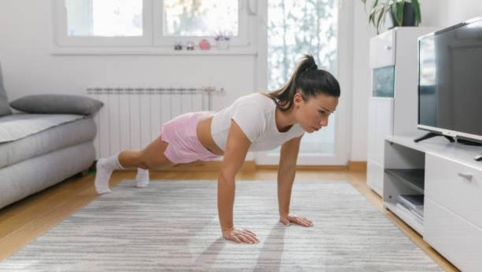

5 Olahraga untuk Membentuk Tubuh Ideal, Cukup di Rumah Saja
Olahraga untuk Membentuk Tubuh Ideal. Dilansir Healthline, berikut deretan latihan atau olahraga yang dapat dilakukan untuk membentuk body goals:
- Burpee: Ditujukan untuk membakar kalori pada bagian inti tubuh, bahu, dan paha. Tidak diperlukan peralatan saat melakukan gerakan ini, dan matras juga opsional. Burpee dapat dilakukan sebanyak 3 set dengan masing-masing 10 repetisi.
- Pushup: Termasuk gerakan populer yang tidak memerlukan peralatan khusus. Latihan ini mampu memperkuat bahu dan inti tubuh. Lakukan 5 set pushup dengan 15 repetisi.
- Interval Training: Untuk mendapatkan tubuh ideal, interval training tergolong latihan yang disarankan. Gerakan ini dapat membakar kalori dalam jangka waktu lama bahkan setelah selesai berolahraga. Treadmill dapat digunakan untuk melakukan interval training. Mulai dengan kecepatan rendah dan tingkatkan kecepatan bertahap. Lakukan sesi lari secara bergantian pada kecepatan rendah dan sedang. Selesaikan latihan ini sebanyak 10 hingga 15 kali.
- Weighted Squat Jump: Gerakan ini bantu membentuk bagian bawah tubuh dengan cepat, terutama paha depan dan bokong. Weighted squat jump bisa dilakukan dengan beban ringan yang mudah digenggam, dan penggunaan matras opsional. Lakukan latihan ini sebanyak 5 set dengan 25 repetisi.
- Lunge Jump: Menargetkan paha belakang dan bokong. Denyut jantung akan meningkat dan ketegangan di kaki akan langsung terasa setelah menyelesaikan latihan ini. Lunge jump dapat dilakukan 5 set dengan 30 repetisi (15 repetisi pada setiap kaki, per set).